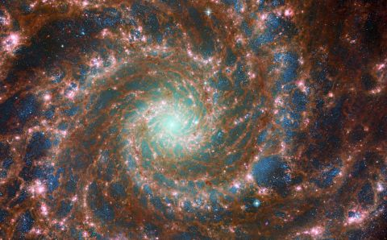

In studying other galaxies, we can learn more about our own. Not only is the James Webb capable of rendering in-depth images of a grander interglactic view, but it can also focus its lense towards specific regions of space, capturing the details of specific astral bodies both within our galaxy and outside the Milky Way.
Image of A Distant and Uniquely Shaped Spiral Galaxy

Images of this galaxy display a skeletal structure of matter holding its structure together through gravity. This image grants us new inisght into how some galaxies may form their unique shapes and patterns.